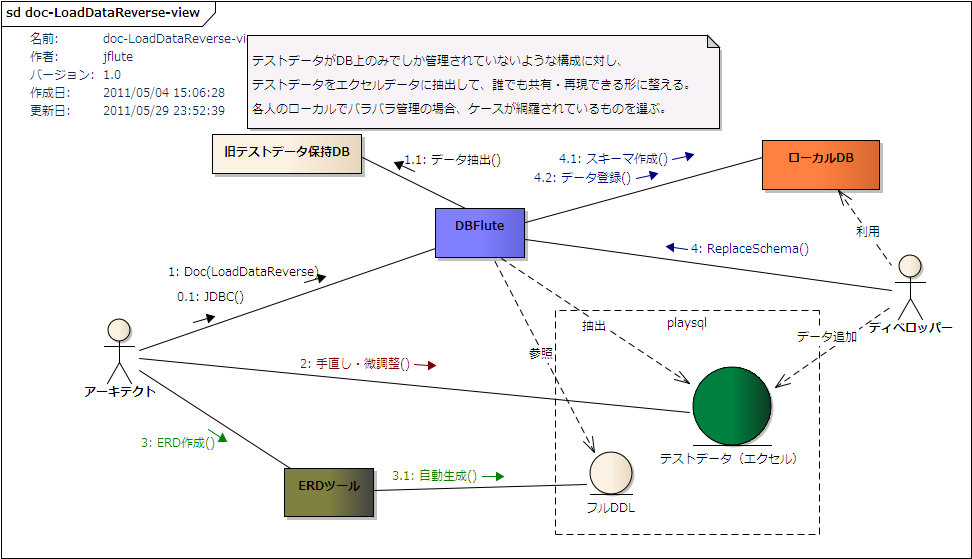

LoadDataReverse
Alto DBFlute のパートです。
${indexlist}LoadDataReverseとは？
DB上のデータを、エクセルやTSVなどのデータファイルとして出力する機能です(@since 0.9.8.4)。
主に以下の二つの目的があります。
- ReplaceSchema導入のために、既存データベースからテストデータの抽出
- ReplaceSchema をまだ導入していない場合に、LoadDataReverse で既存のテストデータベースからテストデータを抽出して、そのまま ReplaceSchema のデータにするとスムーズに導入ができるでしょう。
- 画面で登録したデータを ReplaceSchema で利用する "循環テストデータ運用" ができるように
- アプリ画面でデータ登録して LoadDataReverse で抽出して ReplaceSchema する、というような流れの 循環テストデータ運用 を LoadDataReverse で実現できます。
- 整合性のとれたテストデータを手動で作成していくのは大変な作業です。 既に信頼できるアプリの画面があるのであれば、その画面で登録したデータをエクセルにできれば、効率的にテストケースを増やしていけます。 アプリが完璧でないにしても、出力後に人が目視で確認して業務的な微調整をすれば良いでしょう。それは同時にアプリの動作レビューにもなります。
LoadDataReverse概念図
図 : LoadDataReverse概念図 
{kind=link}
利用方法
ReplaceSchemaの導入や、"循環テストデータ運用" の利用を前提として説明します。
dfpropで出力設定
documentDefinitionMap.dfprop の loadDataReverseMap を有効にして、isReplaceSchemaDirectUse (@since 1.0.4B) を true にします。 (recordLimit は -1 で)
e.g. 単に出力するだけの設定 @documentDefinitionMap.dfprop
...
; loadDataReverseMap = map:{
; recordLimit = -1
; isReplaceSchemaDirectUse = true
; isOverrideExistingDataFile = false
; isSynchronizeOriginDate = false
}
...
manageタスクで叩く
そして、Manageタスクで LoadDataReverse を実行します(@since 0.9.9.7B)。
e.g. Manageタスクで LoadDataReverse の実行 (シェル) @Command
...$ sh manage.sh load-data-reverse
or
...$ sh manage.sh // Enter, and then select the number
reversexlsに出力される
すると、DB上のデータが、DBFluteクライアント/playsql/data/reservexls (@since 1.0.4B) 配下に cyclic-data-[セクション番号]-xxx.xls という形式の名前で出力されます。これは、通常の xls ディレクトリとは違い、TSVやCSVのデータ登録よりも先に実行されるエクセルデータの配置領域です。
- 出力先ディレクトリ
- DBFluteクライアント/playsql/data/[現在のdataLoadingType]/reversexls
- ※dataLoadingTypeは、デフォルトでは ut
- ファイル名
- cyclic-data-[セクション番号]-xxx.xls
e.g. データ出力先 @Directory
dbflute_exampledb
|-dfprop
|-...
|-playsql
| |-data
| | |-ut
| | | |-reversexls
| | | | |-cyclic-data-01-foo.xls
| | | | |-cyclic-data-02-bar.xls
| | | | |-...
| | | | |-loadingControlMap.dataprop
| | | | |-reverse-data-result.dfmark
| | | |
...
同じディレクトリに reverse-data-result.dfmark というファイルが作成されます。どのエクセルファイルに、どのテーブルのデータがどれだけ出力されたかなどの出力結果が記載されています。 その他、出力日時や実行時のプロパティ情報などが確認できます。
いろいろな調整、微調整
xlsディレクトリの方はもう要らない
既に ReplaceSchema 運用していて循環テストデータ運用を始める際に、同じ dataLoadingType (通常は ut) の xls ディレクトリ配下のエクセルデータをそのまま置いておくと reversexls の方のデータと内容が重複してしまいます。xlsディレクトリの方のエクセルデータは削除しておきましょう。
既存エクセルに出力するオプション
LoadDataReverseで出力したデータがそのまま手動調整なしで ReplaceSchema で登録できれば一番ですが、必ずしもそうできるとは限らないので、出力後に手動で微調整が必要かもしれません。 また、エクセルファイルの構成(テーブルの定義位置やエクセルファイル名)を人のわかりやすい構成に直したいものです。 ただ、手動調整しても、デフォルトでは出力時に DBFlute が自動構成されたもので上書きされてしまいます。
手動調整後、手動で調整された既存のエクセルファイルの構成のままデータ出力したい場合は、 isOverrideExistingDataFile を true にすると、既存の構成がキープされます。FK順序の調整は完全に人に委ねられたと言える状態になります。 また、既存のエクセルに存在しないテーブルは、unknown という名前の付いたファイルに一律出力されますので、出力後に手動でいい感じに調整します。
ただし、まだDB変更が多い段階では手動調整のコストが高くなるので、調整の必要なく循環ができるのであれば、しばらくはこのオプションは使わない方がよいでしょう。 どのエクセルにどのテーブルが出力されたかは、reverse-data-result.dfmark を見ればわかりますので。
DateAdjustmentの同期オプション
データ登録制御 (loadingControlMap.dataprop) の相対的な日付調整における基準日を、自動的に同期することができます。 日付調整が有効の状態で LoadDataReverse すると、調整された後のデータがエクセルデータとして出力されます。 よって、基準日は LoadDataReverse を実行した日付にするのがベストであると言えます。
isSynchronizeOriginDate を true に設定すると、基準日が実行した日付に修正され、実行のたびにつどつど手動で修正する必要がなくなり、修正忘れも防ぐことができます。
同期処理の結果は、LoadDataReverse を実行したときに作成される出力結果の確認ドキュメント(reverse-data-result.dfmark)に記載されるので、 本当に同期されたかどうかを確認したいときは、そのファイルを見ると良いでしょう。
いろいろな考慮
FK順序の考慮
ReplaceSchemaのエクセルデータの土台のためという目的を考慮して、FK順序を "ある程度" 考慮して順番でテーブルのデータが出力されます。厳密には完璧ではありませんが、単純な関連であればそのままの順番で ReplaceSchema に適用できるでしょう。
FK制約違反が発生する場合は、手動でエクセルの順序を調整する必要があります。
長いテーブル名の考慮
エクセルのシート名に利用できる文字数に、(約)30文字までという制限があります。 それを超えるテーブル名がある場合は、ReplaceSchema の長いテーブル名対応の機能に沿った tableNameMap.dataprop を生成します。その場合のシート名は DBFlute が決め打った仮の名前になっているので、これを土台にする場合は手動で微調整すると良いでしょう。
ラージデータの考慮
エクセルの一つのセルに格納できる文字数に、(約)32,767文字までという制限があります。 それを超えるカラムデータがある場合は、別シートに分割して出力されます。ReplaceSchema では、その分割されたデータは結合されて登録されます。 (@since 1.0.5C)
commonのテーブルは出力対象外
common配下のエクセルデータで定義されているテーブルは出力されません。 ReplaceSchemaの直接利用を想定したときに不要と思われるためです。(出力してしまうと、重複したデータとなってしまう)
一つ前の出力結果をバックアップ
実行すると、出力ディレクトリ配下の既存のエクセルファイルは全て削除された上でデータが出力されます。 念のため、それら削除されるエクセルファイルを ZIP に固めたファイルを "出力ディレクトリ/backup" ディレクトリ配下に latest-data.zip という名前で保存します。実行するたびに、この ZIP ファイル自体を上書きしていきますので、二世代前のものは保存されません。
エクセルの最大行数を超えた場合
DBFluteがサポートしているエクセルの最大行数が 655xx なので、出力最大レコード数を 65000 と決め打ちで絞っています。もし、それを超える件数のデータが入っていて、かつ、recordLimit をそれ以上に設定した場合は、別途 TSV データとして出力されます(@since 0.9.8.3)。TSVファイルは、reversetsv ディレクトリに出力されます(@since 1.0.4B)。(1.0.4Bより前のバージョンでは、tsvに出力されます)
TSV データへの出力は、一件ずつのフェッチ式になっているため、大量件数でもメモリ不足になることは基本的にありません。
全体的に行数が多い場合
逆に、エクセルの最大行数を超えていない場合で、全体的なテーブルの累積行数が多いとメモリ不足になる可能性があります。 (エクセルへの書き込みはライブラリの都合上、フェッチ式になっていないため)
その場合、タスクのメモリ設定を調整することで実行できるようになる可能性がありますが、 基本的には LoadDataReverse はそのような大容量のデータを落とすための機能ではありません。
細かい仕様
細かい仕様を把握して、どのような調整を行えば良いのか判断していきましょう。
- バイナリ型のデータは全て null で出力
- バイナリ型のデータはサポートされず、全て null として出力されます。
- テストデータとして必要な場合は、手動で準備します。
- JDBCタスクで取得されるテーブルが対象
- 自動生成対象外(JDBCタスクの時点で対象外)となっているテーブルのデータは出力されません。 そのテーブルのデータも出力したい場合は、一時的にそのテーブルも自動生成対象にする必要があります。
- ビュー(VIEW)は対象外
- ビュー(VIEW)はデータ出力対象外です。 当然のことと言えば当然ですが、ビューをシノニムの代わりに使っているような場合は、 この機能を利用するときだけ一時的にその参照先テーブルを自動生成対象にする必要があります。
- 追加スキーマのテーブルは対象外
- AdditionalSchema で定義されている追加スキーマのテーブルは対象外です。 そもそも ReplaceSchema で取り扱うスキーマはメインスキーマであることが基本なためです。
- シノニム(SYNONYM)は出力される
- シノニム(SYNONYM)はデータ出力対象です。ただし、シノニムが自動生成対象になっていることが前提です。 シノニムの参照先テーブルも自動生成対象となっている場合は、重複してデータが出力されますので、手動調整でどちらか片方を削除する必要があります。
- FK制約の順序考慮は厳密ではない
- テーブル間で複雑な参照関係を持っている場合に、FK制約の順序考慮が厳密にならない可能性があります。 その場合は、手動でエクセルのシートの順序を変えたり、エクセルファイル構成を変えたりと調整する必要があります。
- 厳密な精度は保証されない
- 例えば、日付型は以下のような形式で出力されます。
-
- DATE : yyyy/MM/dd (Oracleは HH:mm:ss も追加)
- TIMESTAMP : yyyy/MM/dd HH:mm:ss.SSS
- TIME : HH:mm:ss
- もし、TIMESTAMP型がこの書式を超える細かい精度を持っていると、その精度は失われます。
- その他の型は、単なるJDBCドライバの時点で文字列に変換したものを利用します。 JDBCドライバや文字列に直した時の特徴的な仕様によって、精度が失われる可能性はあります。
- これら精度を厳密に移行したい場合は、手動で調整する必要があります。 また、あくまでテストデータの移行というのを大前提としているので、実業務の本番データの移行などでは利用できません。
- その他、メジャーでない型はサポートされない
- 例えば、PostgreSQL の OID 型など、取扱いの難しいものなどはサポートされません。 明示的にサポートしていないわけではなく、そういった型がある場合、単にJDBCドライバの時点で文字列に変換したものが出力されます。 よって、JDBCドライバがその文字列を再解析できる場合は、ReplaceSchema でその文字列のままで登録できるかもしれません。
単に出力するだけの利用も
エクセル形式でデータを閲覧するためや、データを加工して多目的に利用するなど、ReplaceSchemaと関係なく "単にデータ出力するだけ" の利用もできます。
その場合は、documentDefinitionMap.dfprop の loadDataReverseMap にて、isReplaceSchemaDirectUse は false にして実行します。
e.g. 単に出力するだけの設定 @documentDefinitionMap.dfprop
...
; loadDataReverseMap = map:{
; recordLimit = -1
; isReplaceSchemaDirectUse = false
; isOverrideExistingDataFile = false
; isSynchronizeOriginDate = false
}
...
エクセルの出力先は playsql ではなく、DBFluteクライアントの output/doc/data 配下となります。こちらは、特に DBFlute のどの機能からも参照されません。
e.g. 単に出力するだけでのデータ出力先 @Directory
dbflute_exampledb
|-dfprop
|-output
| |-doc
| | |-data
| | |-reverse-data-01-foo.xls
| | |-reverse-data-02-bar.xls
...
この場合、ReplaceSchemaへの直接出力のときとは違い、ReplaceSchemaのテストデータのcommon配下のエクセルに定義されたテーブルであっても出力されます。 (もう ReplaceSchema とは関係がありません)
利用方法の歴史的変遷
機能が発展していく中で、利用方法がちょっとずつ変わってきた歴史があります。
- 0.9.9.7A 以前ではDocタスクにて (@until 0.9.9.7A)
- 0.9.9.7A 以前では、Manageタスクでの実行ではなく、プロパティの設定を有効にしてDocタスクを実行すると LoadDataReverse が実行されました。
- 1.0.4A 以前ではプロパティ名が違う (@until 1.0.4A)
- 1.0.4A 以前では、playsqlに直接出力するプロパティ isReplaceSchemaDirectUse が、isOutputToPlaySql となっていました。ちなみに、既存のエクセルファイルに上書きや、DateAdjustment の基準日の同期などのオプションは、このプロパティ名の変更と共にサポートされた機能です。 このとき、一気に LoadDataReverse が現場フィットするように改良されました。
- 1.0.4A 以前では共通カラムはオプション (@until 1.0.4A)
- 1.0.4A 以前では、デフォルトでは共通カラムは出力されません(@until 1.0.4A)。 共通カラムを出力したい場合は、documentDefinitionMap.dfprop の loadDataReverseMap の isContainsCommonColumn (@until 1.0.4A) を true にします。
- 1.0.4B 以降では、共通カラムは必ず出力されます。 共通カラムを除外するメリットが現場の利用状況を想定したときにあまりないと判断されたためです。
厳密なデータダンプではない
この機能は、本番の業務データの移行などで利用できるデータダンプ(DataDump)ではありません。 人の目で見る、もしくは、手動での調整を入れて ReplaceSchema におけるエクセルデータの土台にする、という目的のものです。 もし、業務の一環としてのデータダンプを目的とするなら、もっとデータの精密度を高めたり、もっと色々な状況に対応できるようにしたりする必要があるでしょう。